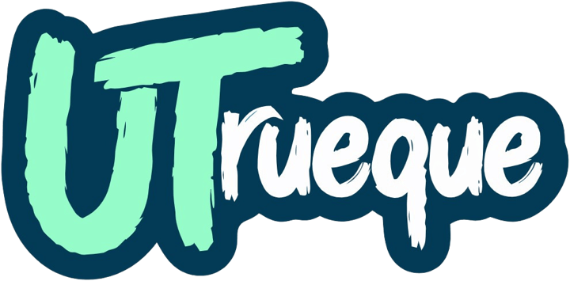

Buscando corridas del pipeline…
0:00
Pasos del pipeline
- Todavía no hay pasos que mostrar.
Lo que observa el agente
Revisa GitHub Actions cada pocos segundos.
Preparando
Estoy buscando la corrida más reciente del pipeline.

Sin token, GitHub permite 60 consultas por hora; con token, 5000. El token se guarda solo en esta pestaña y se borra al cerrarla. Nunca lo subas al repositorio.
Revisa GitHub Actions cada pocos segundos.
Estoy buscando la corrida más reciente del pipeline.